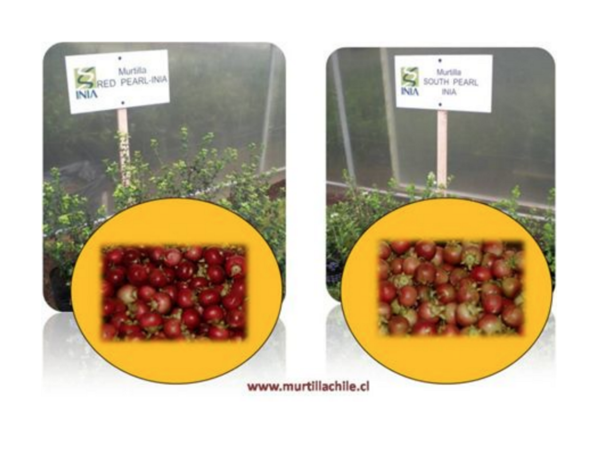

5 Murtilla

(Myrtus ugni Molina, Eugenia ugni Molina, Ugni poeppigii O.Berg, Ugni philippi O.Berg, Ugni ugni Macloskie,Ugni myrtus Macloskie)
Luis Torralbo1*, Ivette Seguel2, Erick Scheuermann3
1Instituto de Agroindustria, Facultad de Ingeniería y Ciencias, Universidad de La Frontera, Temuco, Chile. Luis.torralbo@ufrontera.cl
2Instituto de Investigaciones Agropecuarias, Centro Regional de Investigación Carillanca, Camino Cajón – Vilcún Km 10, Chile. iseguel@inia.cl
3Departamento de Ingeniería, Facultad de Ingeniería y Ciencias, Universidad de La Frontera, Temuco, Chile. ericks@ufrontera.cl
* Autor para correspondencia
5.1 Introducción
5.1.1 Descripción botánica y etnobotánica
Ugni molinae Turcz., también conocida como “murtilla”, “murta”, “uñi”, “myrtle berry”, “Chilean cranberry”, o “Chilean guava”, es una planta nativa de Chile. Es un arbusto silvestre (aprox. 1.8 m de altura) y de la familia Myrtaceae que típicamente habita cerca del litoral y de las montañas pre-Andinas y en el Archipiélago de Juan Fernández (Aguirre, et al., 2006), (Muñoz, 1966), (Belov, 2011). También la murtilla brota rápidamente en áreas desoladas, tales como sitios antiguos de flujo de lava, lo que indica su versatilidad (Lavin & Vega, 1996), (Landrum & Donoso, 1991). La murtilla es una planta regional muy conocida que tiene frutos globulares rojos aromáticos. Estas bayas comúnmente poseen un diámetro que va desde los 0,7 a los 1,3 cm y un peso entre 0,25 y 0,40 g (Muñoz, 1966), (Lavin & Vega, 1996). Se dice que este fruto combina la dulzura de la fresa con la acritud de una guayaba y la textura de un arándano seco (Janick & Paul, 2008). Las hojas de murtilla se han utilizado en la medicina popular chilena para el tratamiento de condiciones tales como diarrea, disentería y el dolor del tracto urinario (Montenegro, 2000). También es usada por sus propiedades astringentes y estimulantes (Muñoz, 1966).
5.1.2 Fitoquímica
La composición fitoquímica de la murtilla incluye una amplia variedad de polifenoles en sus hojas y frutos (Rubilar, et al., 2006), (Shene, et al., 2009) y ácidos pentacíclicos triterpénicos en sus hojas (ácido alfitólico, corosólico y asiático) (Aguirre, et al., 2006), (Rubilar, et al., 2006), (Shene, et al.,, 2009). También ha sido demostrado que la composición química de la murtilla puede variar dependiendo de las condiciones climáticas a las cuales se somete a la planta durante su crecimiento: un clima extremo es la condición que promueve el contenido de polifenoles en sus hojas (Shene, et al., 2009). Además, se han dilucidado 24 compuestos volátiles del aroma de la baya de la murta, de los cuales los componentes principales son metil-2-metil butanoato, etil butanoato, 2-metil etil butanoato, metil hexanoato, etil hexanoato, metilbenzoato y etil benzoato (Scheuermann, et al., 2008).
5.1.3 Actividad biológica y efectos a la salud
Los extractos de hoja de murtilla han mostrado una fuerte actividad tópica antiinflamatoria en ratones, y esto es principalmente debido a la presencia de varios ácidos triterpénicos pentacíclicos, incluyendo los ácidos alfitólico, asiático y corosólico 2-α-hidroxi derivados (Aguirre, et al., 2006). Además, los extractos de hoja de murtilla han mostrado actividad analgésica in vivo en modelos de ratón de dolor térmico y químico (Del Porte, et al.,, 2007) y también propiedades antioxidantes protectoras en eritrocitos humanos expuestos a estrés oxidativo de ácido hipocloroso (Suwalsky, Orellana, Avello, & Villena, 2007). Más aún, el consumo de infusiones de hoja de murtilla ha denotado incrementar la capacidad antioxidante del suero humano (Avello & Pastene, 2005).
La actividad antioxidante y otras propiedades que los extractos de hoja de murtilla han demostrado poseer están posiblemente relacionadas a su capacidad para localizarse en la bicapa de la membrana, restringir su fluidez, impedir la difusión de radicales libres y proteger la alteración de eritrocitos humanos (Suwalsky, Orellana, Avello, & Villena, 2007), (Suwalsky, Orellana, Avello, Villena, & Sotomayor, 2006). En suma, los extractos acuosos de las hojas de murtilla tienen un efecto inhibitorio contra el crecimiento de Pseudomonas aeruginosa, Klebsiella pneumoniae, y Staphylococcus aureus, con pocos efectos deletéreos sobre las bacterias probióticas beneficiosas (Shene, et al., 2009).
Los extractos de hojas secas de murtilla han mostrado efectos nematicidas contra el nematodo agallador, Meloidogyne hapla (Böhm, Arismendi, & Ciampi, 2009).
5.1.4 Uso comercial
El uso de la murtilla está principalmente restringido a Sudamérica, y esta planta actualmente no exhibe un uso comercial extendido. Comúnmente, es recolectado y vendido en ferias locales para su consumo fresco y para su procesamiento a pequeña escala. Jugos, mermeladas, jaleas, y licores son preparados a partir de sus bayas, mientras que de sus hojas se puede hacer té, y bebidas similares al café pueden ser derivadas de sus semillas (Muñoz, 1966), (Landrum & Donoso, 1991). Aunque esta planta y sus productos derivados son vendidos principalmente a nivel local, ha mostrado ser una promesa para el crecimiento comercial futuro. Las hojas de murtilla han despertado el interés en la industria cosmética debido a su contenido de antioxidantes, fitoestrogénico y polifenólico, los cuales pueden ayudar a combatir las arrugas y otros signos de envejecimiento prematuro (Rubilar, et al., 2006).
Además, la murtilla también puede ser usada en la elaboración de alimentos como un preservativo amigable con el medioambiente. Estudios recientes han incorporado extractos de hoja de murtilla en películas comestibles basadas en gelatina para una variedad de alimentos, protegiendo a estos productos alimenticios de la deshidratación y del deterioro causado por la exposición a luz ultravioleta. Las películas basadas en gelatina que contienen extractos de hoja de murtilla muestran potencial para mantener la calidad y vida útil de ciertos alimentos cuando se comparan a las películas típicas de gelatina.
Cuando se incorporan en matrices gelatinosas basadas en pescado, las hojas de murtilla denotan incrementar la transparencia de las películas, y de este modo aumentan los niveles de absorbancia de luz ultravioleta e impiden la oxidación lipídica inducida por luz ultravioleta. El alto contenido de polifenol y la capacidad antioxidante de las hojas de murtilla también dificultan la rancidez de los alimentos y la oxidación lipídica (Gómez-Guillén, Ihl, Bifani, Silva, & Montero, 2007), (Gómez & San Martín, 2007).
Las hojas de murtilla también han sido usadas como un agente “cross-linking” en las películas basadas en carboximetilcelulosa. Su incorporación ha mostrado disminuir la permeabilidad al agua de las películas mientras logran permeabilidad selectiva a gases; este mecanismo se atribuye al alto contenido de polifenoles de las hojas (Bifani, et al., 2007). De esta manera, la murtilla muestra un tremendo potencial como preservante natural para una variedad de productos alimenticios que van desde carnes a frutas y vegetales frescos.
| Compuesto | Cantidad | Unidad |
|---|---|---|
| Calorías | 75 | Kcal/100 g |
| Agua | 77,2 | g/100 g p.c. |
| Proteína | 0,7 | g/100 g p.c. |
| Lípidos | 0,3 | g/100 g p.c. |
| Cenizas | 0,6 | g/100 g p.c. |
| Carbohidratos | 19,4 | g/100 g p.c. |
| Fuente: (Schmidt-Hebbel, Pennacchiotti, Masson, & Mella, 1992) |
| Ítem | Valor | Unidad |
|---|---|---|
| Capacidad antioxidante (ORAC) | 10.770 | µmol ET/100 g p.f.¹ |
| Fibra cruda | 1,8 | g/100g p.c. |
| Fibra insoluble | 17,7 | g/100g m.s.² |
| Vitamina | 65,38 | mg/100g |
| Antocianinas³ | 0,64 | g/100 g p.f. |
| 1: p.f.: peso fresco; 2: m.s.: materia seca; 3: Antocianinas expresadas en equivalentes de malvidina 3-glucósido | ||
| Fuente: (INTA, Universidad de Chile, 2013) |
| N° | Región | Ausente | Baja presencia | Presencia media | Alta presencia | Muy alta presencia |
|---|---|---|---|---|---|---|
| XV | Arica y Parinacota | X | ||||
| I | Tarapacá | X | ||||
| II | Antofagasta | X | ||||
| III | Atacama | X | ||||
| IV | Coquimbo | X | ||||
| V | Valparaíso | X | ||||
| RM | Metropolitana de Santiago | X | ||||
| VI | Libertador General Bernardo O’Higgins | X | ||||
| VII | Maule | X | ||||
| VIII | Biobío | X | ||||
| IX | La Araucanía | X | ||||
| XIV | Los Ríos | X | ||||
| X | Los Lagos | X | ||||
| XI | Aysén del General Carlos Ibáñez del Campo | X | ||||
| XII | Magallanes y Antártica Chilena | X |
|
5.2 Datos productivos
La mayoría de los datos sobre el cultivo fueron obtenidos de la publicación: CULTIVO DE LA MURTILLA: PAQUETE TECNOLOGICO PRELIMINAR (Seguel, et al., 2009)
En general se tiende a pensar que la murtilla en condiciones de cultivo tiene menores requerimientos que otras berries, esto atribuido a su buena adaptación en variados ambientes y tipos de suelo en su estado silvestre. Sin embargo, estudios realizados por INIA Carillanca, permiten señalar que la murtilla destinada a la producción comercial de fruta tiene requerimientos nutricionales, hídricos, de control de plagas y enfermedades similares a otros frutales menores.
La murtilla cultivada presenta mejor adaptación en la zona costera del macro ambiente comprendido entre la Región del Biobío y la Región de Los Lagos, con bajos diferenciales térmicos entre el día y la noche y con elevada humedad relativa.
5.2.1 Ecotipos y/o variedades
El material vegetal para establecer una plantación puede provenir ya sea de ecotipos propagados por los agricultores, o de variedades recientemente liberadas por el INIA. Los ecotipos o plantas silvestres multiplicadas por viveros, sin una evaluación agronómica sistemática, no pueden asegurar rendimiento potencial; sólo pueden garantizar el color de los frutos y su diámetro.
Las variedades de murtilla disponibles son Red Pearl INIA y South Pearl INIA, estas variedades fueron liberadas por el INIA.
| Característica | Variedad Red Pearl INIA | Variedad South Pearl INIA |
|---|---|---|
| Hábito de crecimiento | Erecto | Semi erecto |
| Color del fruto | Rojo oscuro | Rojo claro |
| % de cobertura del color del fruto | 100% tapado | 100% tapado |
| Diámetro del fruto | 1,0 cm | 1,1 cm |
| Peso del fruto | 0,8 gr | 0,9 gr |
| Sólidos solubles (*) | 15 °Brix | 14 °Brix |
| Rendimiento de fruto (año 3) | 1,1 kg/planta | 0,9 kg/planta |
| (*) varía uno a dos grados Brix dependiendo del año de evaluación |
Las variedades de murtilla INIA son recomendadas para establecer plantaciones en zonas agroecológicas del secano costero y del valle central, entre las regiones del Biobío a la Región de Los Lagos, en zonas libres o de baja ocurrencia de heladas y con disponibilidad de riego.
5.2.2 Consideraciones para la selección del sitio de plantación
Las plantaciones no deben realizarse cerca de quintas de manzanos o membrillos, ya que ambos frutales normalmente son hospederos de plagas como la de sierra del sur, insecto que ataca a la murtilla. Deben evitarse sitios donde se detecte gusano blanco o cuncunilla negra. Idealmente el sitio de plantación debe estar protegido del viento sobre todo en los primeros años de establecimiento del huerto.
5.2.3 Época de plantación
En zonas con inviernos no muy severos como el sector costero de las regiones del sur de Chile, se pueden realizar plantaciones durante todo el año. Sin embargo, plantaciones de primavera e inicio de verano, con riego logran un mejor establecimiento de las plantas pues evitan el daño de heladas.
5.2.4 Preparación del suelo
En general, la murtilla se puede cultivar en todo tipo de suelos, con la consideración de que éstos posean un buen drenaje. Los suelos compactados deben subsolarse para eliminar el “pie de arado” y mejorar su drenaje. En general, en suelos trumaos y transicionales, sin presencia de pie de arado, se recomienda “cincelar” y luego “rastrear”, para eliminar los terrones y emparejar la superficie de ellos.
5.2.5 Establecimiento del cultivo
Lo óptimo es formar un huerto con plantas de 1,5 a 2 años sanas y de buena arquitectura, mantenidas en viveros en macetas de 3 a 5 L. La plantación, en lo posible, debe efectuarse con orientación norte-sur para permitir así una adecuada ventilación y una exposición solar uniforme en todas las plantas, durante todo el año. Es recomendable realizar el establecimiento en camellones dado que favorece el desarrollo de las raíces, mejora el drenaje y aleja la planta de posibles ataques de hongos del suelo.
5.2.6 Fertilización
En general, se recomienda fertilizar la plantación, complementando con otras tres fertilizaciones en el primer año de plantación del huerto de murtilla. En los años siguientes también debe realizarse una fertilización anual del huerto con base en el análisis del suelo. En cuanto a la plantación, los fertilizantes deben aplicarse “en el hoyo de plantación” y mezclarse con el suelo, evitando el contacto directo de éstos con las raíces de las plantas. Las dosis totales anuales de fósforo, potasio y nitrógeno recomendadas son: 15-20 gramos de P2O5/planta (Superfosfato triple), de 16 a 20 gramos de K2O/planta (muriato de potasio) y de 16 a 20 gramos de N/planta.
5.2.7 Riego
La disponibilidad de agua en la primavera y verano es un factor para considerar al planificar una plantación de murtilla. Si bien esta especie en su hábitat natural se desarrolla en condiciones edafoclimáticas extremas, no es posible lograr una producción económicamente rentable sin satisfacer sus requerimientos hídricos.
5.2.8 Malezas y su control
Las plantas de murtilla no poseen una buena habilidad para competir con las malezas, principalmente durante los primeros años del huerto. Esto explica que los huertos sean susceptibles casi siempre de ser invadidos por malezas, las que en situaciones extremas pueden ocasionar incluso muerte de plantas. Previo a la plantación las malezas pueden controlarse mecánicamente con implementos de labranza y/o con herbicidas no selectivos aplicados al follaje de las malezas como: glifosato (sistémico, varios nombres comerciales), paraquat o paraquat+diquat (contacto, varios nombres comerciales). Con implementos de labranza los mejores resultados se logran en primavera, verano y principios de otoño, debido a condiciones climáticas más favorables para destruir las malezas. El control de las malezas sobre la hilera puede hacerse en forma manual, con azadón, con cubiertas o mulch y/o con herbicidas selectivos.
5.2.9 Plagas y enfermedades
Plagas: En condiciones de cultivo, la murtilla es hospedera de plagas que afectan principalmente la raíz, cuello y hojas de la planta. Entre las plagas que afectan a las raíces está el gusano blanco, que en estados larvarios consume un gran número de raíces nuevas. Una forma de disminuir su incidencia es mantener una cubierta verde entre las hileras para abastecer de alimento a estas larvas y evitar así el masivo consumo de raíces de la especie cultivada. Otra plaga son los gusanos cortadores (cuncunillas) que se alimentan del cuello de la planta provocando muchas veces un anillado de la corteza, lo que causa una rápida muerte de la planta.
Enfermedades: La murtilla cultivada es también atacada por hongos patógenos que se ven favorecidos por alta temperatura y humedad, y que atacan, indistintamente, raíces, cuello, madera y follaje. Para controlar en forma preventiva este tipo de enfermedades se recomienda podar las ramas enfermas, quemar o eliminar restos de poda del huerto, desinfectar las tijeras al momento de podar, aplicar fungicidas en primavera y otoño, y llevar a cabo lavados de otoño y primavera con productos cúpricos en las zonas afectadas de la planta.
5.2.10 Poda
Poda de formación: Esta práctica tiene como objetivo desarrollar la estructura de soporte de futuras producciones. Para ello debe evitarse el crecimiento en altura eliminando yemas apicales y ramas muy apegadas al suelo.
Poda de producción: Este tipo de poda se realiza en el periodo de madurez de la planta y puede incidir directamente en la producción de fruto y en el calibre de ellos. Aun cuando este tipo de manejo se está evaluando, está dirigido a eliminar la madera vieja o dañada, formar simétricamente la planta para permitir una producción uniforme en todos los sectores del seto, permitir la entrada de luz para estimular la formación de yemas florales e hijuelos en la base y evitar excesivos crecimientos vegetativos.
5.2.11 Polinizadores
La murtilla es una especie predominantemente alógama (reproducción cruzada), en la que se obtienen mayores producciones y mayores calibres de fruto, cuando se favorece este tipo de polinización. Por ello es importante la presencia de agentes polinizadores en el huerto, especialmente abejas, así como moscardones.
5.3 Datos productivos generales
| ítem | Valor | Unidad | Año dato | Referencia |
|---|---|---|---|---|
| Superficie Silvestre en Chile | 25.000 | Há | 2011 | Estimación |
| Rendimiento promedio silvestre | 1,5 | Ton/há | 1996 | (AFODECH Ltda.) |
| Superficie plantada (cultivada) en Chile | 31 | Há | 2011 | (Torralbo, 2011) |
| Rendimiento promedio cultivo (Rendimiento estabilizado, sexto año) con variedades INIA | 9 | Ton/há | 2011 | (Seguel, 2011). |
| Producción/recolección a nivel nacional (silvestre) | 37.500 | Ton | 2011 | Estimación (25.000 ha x 1.500 kg/ha) |
| Producción/recolección La Araucanía | 4.500 | Ton | 2011 | Estimación (3.000 ha x 1.500 kg/ha) |
5.4 Datos de mercado
| Mercados (demandas) | Comentario |
|---|---|
| Ferias y mercados | Gran parte se comercializa directamente o a través de intermediarios y “puesteros”, en ferias y mercados o puerta a puerta. Prácticamente la totalidad del producto es comercializado en fresco y de manera informal en ferias y en la calle de ciudades ubicadas en las regiones productoras. |
| La murtilla al igual que lo que ocurre con el calafate y los digüeñes son vendidos directamente por recolectores que luego de acopiarlos los comercializan informalmente en los mercados o vegas locales del sur de Chile. (http://assets.panda.org/downloads/pfnm.pdf, s.f.) | |
| Productos gourmet | Estos productos se enfocan actualmente en turistas con un poder adquisitivo mayor, se producen chocolates, licores, mermeladas, té, conservas, jarabes, entre otros. (Murtillachile, s.f.) (www.supernatural.cl, s.f.) |
| Cosméticos | Diversas empresas producen líneas cosméticas a base de hojas, cremas, fragancias, jabones. (www.supernatural.cl, s.f.), (Levinia, s.f.) |
| Suplementos alimenticios | Este producto se encuentra en diversos sitios Web donde es promocionado como un suplemento alimenticio que otorga elementos naturales que ayudan a normalizar las funciones del cuerpo que se encuentran debilitadas. (www.supernatural.cl, s.f.), (http://www.tierra-adentro.cl/archivos /arch_esp.php?prog_id=55&ano_id=2005&cod_id=2005_8, s.f.) |
| Chocolates | Las empresas procesadoras de chocolates, si bien adquieren fruta, la cantidad es muy mínima por temporada. (Valdivia, s.f.) |
| Licores | Las empresas productoras, si bien adquieren fruta, la cantidad es muy mínima por temporada. (Myrthus, s.f.), (www.frutosdeafunalhue.cl, s.f.), (Donaguillermina, s.f.) |
5.5 Principales empresas procesadoras
| Empresa Procesadora | Productos | ¿Qué Compra? | Región | Contacto |
|---|---|---|---|---|
| Frutos del Parador Afunalhue | Licor de Murtilla Mermelada de Murtilla | Frutos | Chile, La Araucanía | www.frutosdeafunalhue.cl |
| Productos Mickelsen | Mermeladas y Conservas | Frutos | Chile, RM | |
| Andes Fruit | Vende como productos silvestres la murtilla | Frutos | Chile, RM | |
| MYRTHUS | Licor de murtilla | Frutos | Chile, Los Lagos | |
| Licores doña Guillermina | Licor de murtilla | Frutos | Chile, Los Lagos | |
| Laboratorio Medicinal Fitoterápico Basel | Anticelulítico | S/I | Argentina, Buenos Aires, | http://www.quiminet.com/sh5/ sh_co_1_armadvcvcdadddsaAAss.htm |
| Murtilla Carahue | Mermelada Conserva Licor Jarabe | Frutos | Chile, La Araucanía | |
| Altalena | Ingredientes funcionales en formato polvo secados por liofilización o atomización | Frutos | Chile, RM | AV. SALVADOR 149 Oficina 608 Providencia - Chile. Fono: 56 2 - 204 45 50 |
| SAAUT Group | Jarabe de Murta | Frutos | Chile, Los Ríos | |
| Cosmética Secretos del Bosque Limitada | Gel de Murta Orgánico | S/I | Chile, RM | |
| Huerto azul | Chutney de murtilla Mermelada de murtilla Helados de murtilla Conservas de murtilla | Frutos | Chile, La Araucanía | |
| Vilkun | Berries infundidos en jugos de fruta y miel | Frutos | Chile, La Araucanía | |
| Bayas del Sur | Jugo concentrado de murta | Frutos | Chile, Los Lagos | |
| Fábrica de Chocolates Norweisser | Chocolates | Frutos | Chile, Magallanes- La Araucanía | |
| Supernatural | Cápsulas para celulitis y flacidez | S/I | Chile, RM | despachos.supernatural@gmail.com |
| Ventas Naturales | Crema Natural de Murtilla 60 gramos Jabón líquido | S/I | Chile, RM | |
| Granero del Goloso | Cápsulas antioxidante, antienvejecimiento, combate celulitis, flacidez, reguladora de la microcirculación | S/I | Chile, RM | Granero Goloso, Rincón De Las Delicias. San Antonio 449. Santiago Centro. Teléfono:(2) 63 86 289. |
| Antilahue | Crema antioxidante y regeneradora | S/I | Chile, Los Lagos | |
| Produnatur | Cápsulas de murtilla Antioxidante anticelulitis | S/I | S/I | |
| Martelnatural | Suplemento alimenticio | S/I | ||
| Machitún | Té de murtilla | Frutos | Chile, Biobío | |
| Index Salus Ltda. | Hierba medicinal y aromática, té en mezcla | Fruto | Chile, La Araucanía | |
| Mass productos Artesanales | Jaleas, jarabes y conservas | Fruto | Chile, Los Lagos | productosartesanalesmass@hotmail.com |
| Levinia Manfredini | Vitamurtilla: Tratamiento facial vivificante-antiestrés | Hojas de murtilla | Chile, RM | |
| COSEDEB Ltda. | Te Murta Gel Murta Cremas Murta Corporal Línea Capilar | Hojas de murtilla | Chile, RM |
5.6 Exportaciones
| Ítem | Año 2006 | Año 2007 | Año 2008 | Año 2009 | Año 2010 |
|---|---|---|---|---|---|
| Ton Exportadas (a) | 11.887 | 13.204 | 12.144 | 8.439 | 7.593 |
| US$/Ton Exportadas (b) | 1.180 | 1.203 | 1.564 | 1.319 | 1.404 |
| a) Incluye: murtilla fresca y en conserva; b) En dólares FOB | |||||
| Fuente: (e-COMEX, 2011). |
5.6.1 Glosas de murtilla
20089200: Mezclas de frutas membrillo con murtillas al almíbar en envases de 360cc
08102090: Murtilla fresca murty, categorias todas, calibres todos
20086019: Murtilla en conserva en almibar en frascos de 200 grs.
22087000: Coctel de murtilla, grado alcohólico 20, licor en botella de 0.700 litros
5.6.2 Precios
| Ítem | Año 2006 | Año 2007 | Año 2008 | Año 2009 | Año 2010 |
|---|---|---|---|---|---|
| Tonelada fruta fresca (d) | 3.963 | 3.806 | 6.218 | s/i | 7.359 |
| d) incluye sólo murtilla fresca | |||||
| Fuente: (e-COMEX, 2011) |
5.6.3 Resultados de envíos de fruta desde los años 1989 a 2010
| Exportador | Mercado de Destino | US$/Kilo FOB | Tipo Fruta | Año |
|---|---|---|---|---|
| BERRIES LA UNIÓN | Francia, Alemania, Inglaterra y EUA | 13,4 | Silvestre | 1989 |
| THE FRESH CONNECTION | Japón | 13 | Silvestre | 2007 |
| VITAL BERRY MARKETING | EUA | 3,8 | Silvestre (en malas condiciones) | 2007 |
| VITAL BERRY MARKETING | Japón | 8,6 | Cultivada (Ecotipos locales) | 2010 |
| Fuente: (Torralbo, 2011) |
5.7 Estudio de mercado rirdc 2005
| Ítem | Descripción |
|---|---|
| Solicitante | Tasmanian Myrtus Berries Pty. Ltd. |
| Institución Ejecutora | Corporación de Investigación y el Desarrollo de las Industrias Rurales (RIRDC), de Australia. |
| Objetivo | Conocer la demanda por fruta de murtilla, especialmente, las preferencias de mercados asiáticos específicos. |
| Mercados Estudiados | Hong-Kong (7 millones de habitantes y PIB per cápita: 42 mil dólares). Taipei (2,6 millones de habitantes y PIB per cápita: 30 mil dólares). |
| Metodología General | Se realizaron demostraciones de cocina y de manera paralela se realizaron encuestas a los participantes en las degustaciones: |
| Contactados | Dueños de restaurantes, cocineros, pasteleros, panaderos e importadores. |
5.7.1 Principales resultados
- Hubo una respuesta muy positiva después de probar los frutos y los alimentos preparados con murtilla.
- Un 75% de los encuestados indicó que a sus clientes les gustaría consumir esta berry.
- Hubo buena disposición, aunque no universal, de considerar la compra de fruta congelada o seca, cuando no existiese en el mercado fruta fresca.
- Estos mercados están dispuestos a pagar más por la murtilla que por frutas más conocidas por ellos, como la frambuesa.
- De manera conservadora, la demanda combinada de estos dos mercados se estimó en 300 toneladas después del estudio.
5.8 Desafíos del mercado de la murtilla
Aumentar el consumo doméstico en el país: Desde la VI Región al norte, no existe esta especie, y no se la consume. Es decir, Santiago el principal mercado de Chile, no conoce las bondades de la Murtilla. Hay que recordar que no menos de 1 millón de personas de la Región Metropolitana son de origen sureño y por lo tanto, conocen la murtilla. Por otro lado, su utilización doméstica debe seguir evolucionando hacia preparados alimentarios salados y agridulces para ampliar las posibilidades de uso.
Aumentar el Consumo agroindustrial del país: Las grandes agroindustrias de Chile casi no conocen este fruto y no han generado desarrollos de procesados de murtilla (nuevos productos), que sean comercializados por ellas. No conocen los últimos atributos descritos. Por otro lado, desconocen la diversidad que existe entre los distintos genotipos disponibles, en especial las grandes diferencias en sólidos solubles y su capacidad antioxidante, atributo por el cual está descrito por varios autores como una de las superberries.
Posicionar a la murtilla y sus derivados como productos distintivos de Chile en el contexto internacional: Si bien se nos conoce mucho por las uvas de mesa, las manzanas, los arándanos y otros frutos, ninguno de éstos es nativo de Chile. La murtilla en cambio sí lo es y sus características alimentarias y funcionales son tanto o más interesantes que éstos y otros frutos. Es por ello que la fruticultura menor de Chile está frente a una real oportunidad de diversificación y diferenciación en los mercados internacionales. Hoy el rubro depende de la promoción en el exterior. Ya existen estudios de mercado que avalan una apuesta de las exportadoras, en especial al mercado chino. Hay que recordar que para este mercado culturalmente el rojo es de buena suerte.
Convencer a los productores de berries del Sur de Chile que la murtilla es un complemento y no una competencia con el arándano o la frambuesa: Las épocas de cosecha (recolección) de la murtilla, están distanciadas por al menos un mes del proceso de cosecha del arándano y la frambuesa, lo cual permitiría optimizar la utilización de la infraestructura y no habría competencia por mano de obra.
Sumar la agricultura familiar campesina a las cadenas de valor actuales y generar emprendimientos asociativos de producción primaria y procesamiento: Los pequeños productores poseen superficies de murtilla silvestre y además muchos de ellos se ubican en zonas agroecológicas óptimas para su cultivo, como por ejemplo las comunas costeras de La Araucanía y Los Ríos. Por otra parte, existe la posibilidad real de desarrollar procesamientos altamente diferenciados a una escala que hoy posee muchos subsidios por parte del estado.
5.9 Referencias
AFODECH Ltda. (s.f.). FONTEC. Manejo de Ugni molinae Turcz (murta) establecido naturalmente.
Aguirre, M. D., Backhouse, N. E., Letelier, M., Cassels, B., Silva, X., Alegria, S., & Negrete, R. (2006). Topical anti-inflammatory activity of 2 alpha-hydroxy pentacyclic triterpene acids from the leaves of Ugni molinae. Bioorg Med Chem 2006, 14:5673–5677.
Avello, M., & Pastene, E. (2005). Antioxidant activity of Ugni molinae Turcz ‘‘Murtilla: infuses. Bol Lat Caribe Plantas Med Aromáticas, 4:33–39.
Belov, M. (noviembre de 2011). Chile Flora. Obtenido de http://www.chileflora.com/Florachilena/FloraEnglish/HighResPages/EH0291.htm. Bifani, V., Ramírez, C., Ihl, M., Rubilar, M., García, A., & Zaritzky, N. (2007). Effects of murta (Ugni molinae Turcz) extract on gas and water vapor permeability of carboxymethylcellulose-based edible films. LTW, 40:1473–1481.
Böhm, L., Arismendi, N., & Ciampi, L. (2009). Nematicidal activity of leaves of common shrub and tree species from Southern Chile against Meloidogyne hapa. Ciencia Investigación Agraria, 36:249–258.
Del Porte, C., Backhouse, N., Inostroza, V., Aguirre, M., Peredo, N., Silva, X., . . . Miranda, H. (2007). Analgesic activity of Ugni molinae (murtilla) in mice models of acute pain. J Ethno-pharmacol, 112: 162–165.
Donaguillermina. (s.f.). Obtenido de http://donaguillermina.cl/ e-COMEX. (noviembre de 2011). Obtenido de www.legalpublishing.cl. Gomez, P., & San Martin, J. (2007). What is the modification of the structure in the edge-inner gradient in three size remnants fragments of Ruil forest? . Agro Ciencia, 23:37–41.
Gómez-Guillén, M., Ihl, M., Bifani, V., Silva, A., & Montero, P. (2007). Edible films made from tuna-fish gelatin with antioxidant ex-tracts of two different murta ecotypes leaves (Ugni molinae Turcz). Food Hydrocolloids, 21:1133–1143. http://assets.panda.org/downloads/pfnm.pdf. (s.f.). http://www.tierra-adentro.cl/archivos /arch_esp.php?prog_id=55&ano_id=2005&cod_id=2005_8. (s.f.).
INTA, Universidad de Chile. (enero de 2013). Portal Antioxidantes. Obtenido de http://www.portalantioxidantes.com/orac-base-de-datos-actividad-antioxidante-y-contenido-de-polifenoles-totales-en-frutas/
Janick, J., & Paul, R. (2008). Encyclopedia of Fruits and Nuts. Cambridge, MA: CABI. Landrum, L., & Donoso, C. (1991). Ugni molinae (Myrtaceae), a potential fruit crop for regions of Mediterranean, maritime, and subtropical climates. Econ Bot, 44:536–539. Lavin, A., & Vega, A. (1996). Caracterización de frutos de murtilla (Ugni molinae TURCZ) en el área de Cauquenes. Agric Technol, 56:65–67.
Levinia. (s.f.). Obtenido de http://www.levinia.com/ Montenegro, G. (2000). Chile nuestra flora útil. En Montenegro G, Guía de Plantas Apícola en Medicina Folclórica Artesanal y Ornamental (págs. 241–242). Santiago: Universidad Católica de Chile.
Muñoz, C. (1966). Familia de las mirtáceas. Flores Silvestres de Chile, 155–156.
Murtillachile. (s.f.). Obtenido de http://www.murtillachile.cl/
Myrthus. (s.f.). Obtenido de http://www.myrthus.com/
Rubilar, M., Pinelo, M., Ihl, M., Scheuermann, E., Sineiro, J., & Nunez, M. (2006). Murta leaves (Ugni molinae Turcz) as a source of antioxidant polyphenols. J Agric Food Chem, 54:59–64.
Scheuermann, E., Seguel, I., Montenegro, A., Bustos, R., Hormazábal, E., & Quiroz, A. (2008). Evolution of aroma compounds of murtilla fruits (Ugni molinae Turcz) during storage. J Sci Food Agric., 88:485–492.
Schmidt-Hebbel, D. H., Pennacchiotti, D. Q., Masson, D. Q., & Mella, D. Q. (1992). TABLA DE COMPOSICIÓN QUÍMICA DE ALIMENTOS CHILENOS. Obtenido de http://www.repositorio.uchile.cl/handle/2250/121427
Seguel, I. (2011). (Comunicación Personal). Proyecto FONDEF: Variedades y estrategias para la producción y comercialización de murtilla (Ugni molinae Turcz) en el mercado global.
Seguel, I., Flandez, R., Peñaloza, E., Montenegro, A., Torralbo, L., France, A., . . . San Martín, J. (Noviembre de 2009). Cultivo De La Murtilla: Paquete Tecnológico Preliminar. Obtenido de http://www2.inia.cl/medios/biblioteca/informativos/NR36491.pdf
Shene, C., Reyes, A., Villarroel, M., Sineiro, J., Pinelo, M., & Rubilar, M. (2009). Plant location and extraction procedure strongly alter the antimicrobial activity of murta extracts. Eur Food Res Technol, 228:467–475.
Suwalsky, M., Orellana, P., Avello, M., & Villena, F. (2007). Protective effect of Ugni molinae Turcz against oxidative damage of human erythrocytes. Food Chem Toxicol, 45:130–135.
Suwalsky, M., Orellana, P., Avello, M., Villena, F., & Sotomayor, C. (2006). Human erythrocytes are affected in vitro by extracts of Ugni molinae leaves. Food Chem Toxicol, 44:1393–1398.
Torralbo. (2011). Proyecto FONDEF: Variedades y estrategias para la producción y comercialización de murtilla (Ugni molinae Turcz) en el mercado global.
Valdivia, C. E. (s.f.). http://www.norweisser.cl.
www.frutosdeafunalhue.cl. (s.f.).
www.supernatural.cl. (s.f.).